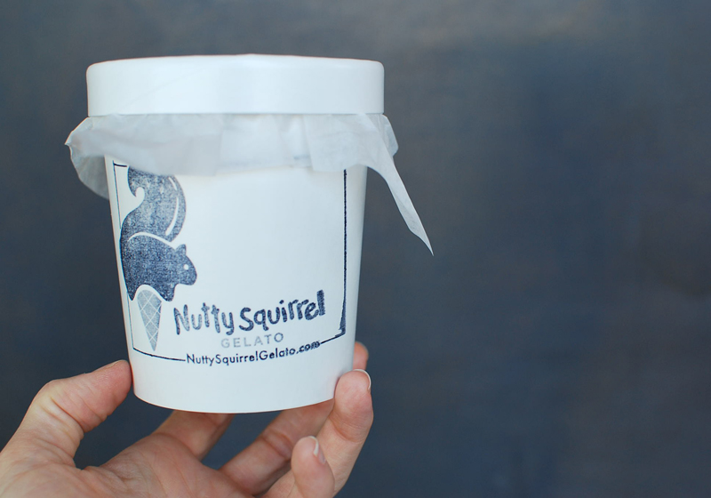
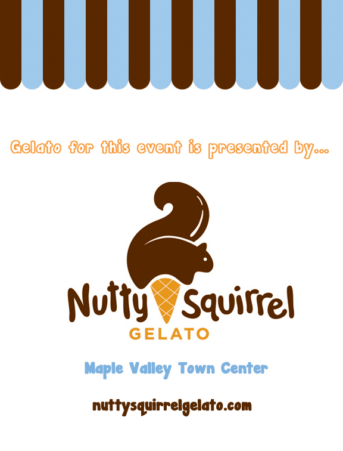
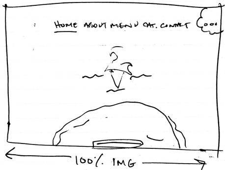
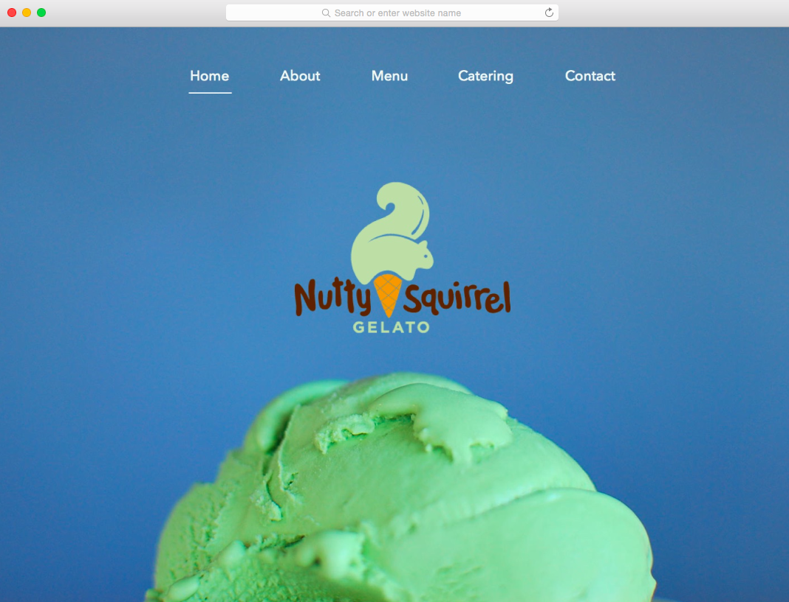
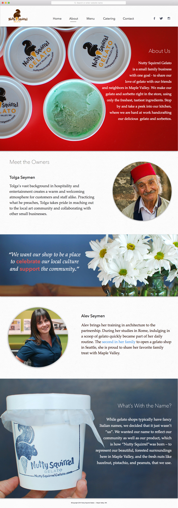
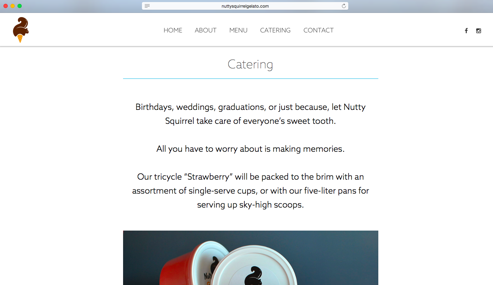
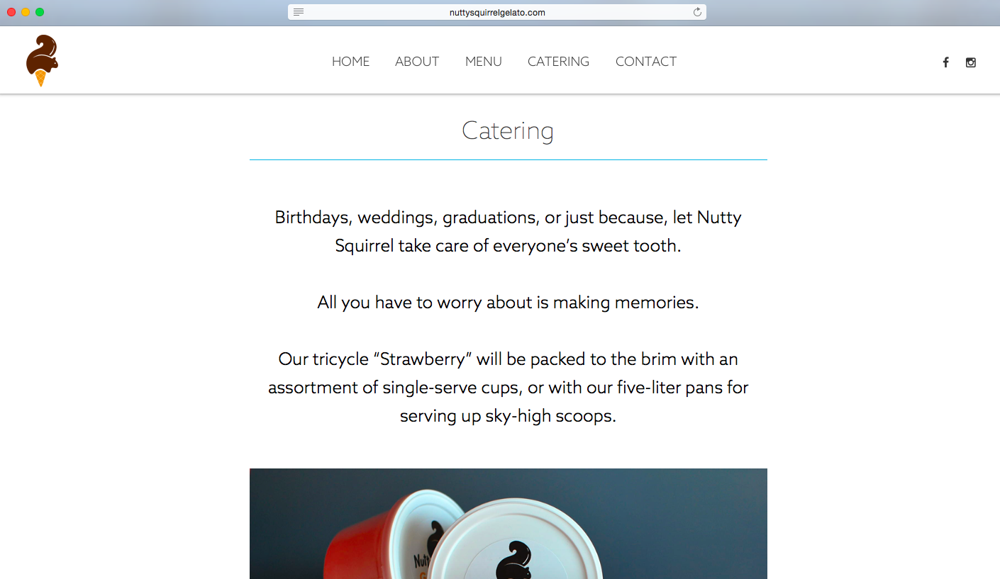
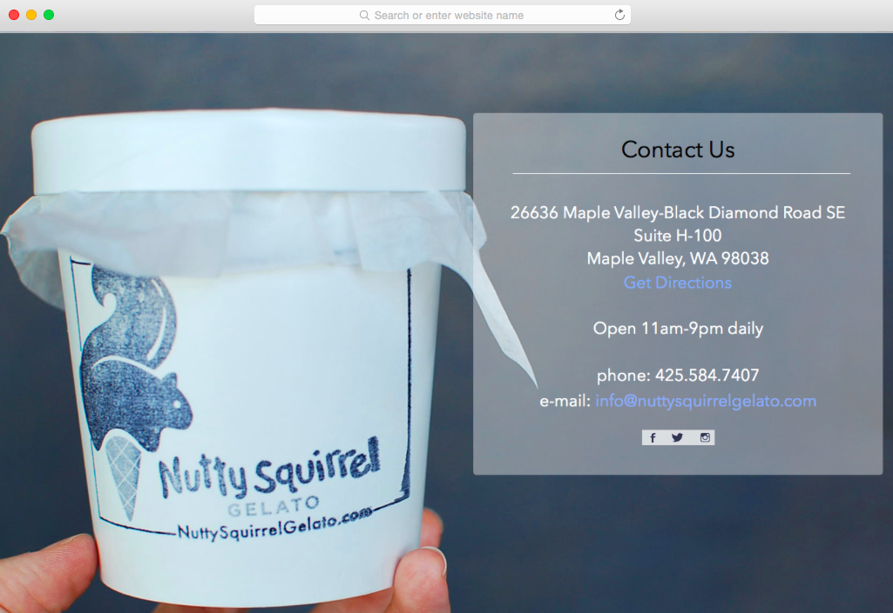
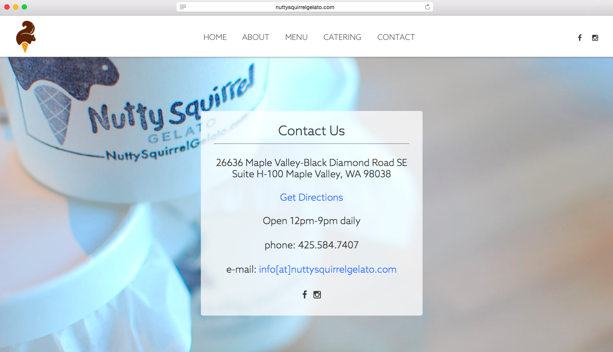
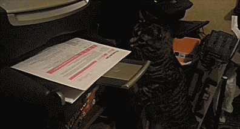

This was written in 2014 as I was just starting out in my design career. I didn't have much work to show at the time and wanted to make the most out of this simple web project. I shot most of the photography, designed the site, and wrote the code from scratch. Years later, I'm still proud of the work I did, and get a kick out of reading such a detailed case study on what I would now consider a quick weekend project.
The owners of Nutty Squirrel are relatives of the Fainting Goat, and reached out to me to for a redesign once they saw their parents site. They felt their current website was heavily focused on kids and family, and sought to have a more “mature” feel without being too serious.
I met with the owners over coffee to discuss their wants and needs for the site:
While I didn’t agree that all of these requests were necessary, I wanted to be able to back up my reasons why. I went home and took some notes, considering both sides to each point.
I knew from my recent experience with Fainting Goat and Yoroshiku that I wanted to take the product photography myself. I started there to give myself more content to work with.
After the photoshoot, I met with the owners again before moving forward. We went over the points brought up in our first meeting, and I explained why I disagreed with some of them:
Changeable logo – they wanted to add a mustache to their logo for Father’s Day, make it orange for Halloween, put a Santa hat on it for Christmas, etc. I explained that I thought this was a bad idea because:
Wooden tree graphic – worked well in the shop, but in web format it doesn’t tell you anything about them or what they offer.

Artist wall – this was not a prominent piece of their business, and takes the focus away from their product.
Scalloped awning graphic – typically seen in physical form, does not translate well into web form. Comes off as awkward, loud, intangible, etc.
Changing flavors daily – this was still a possible option, but automatically uploading to Facebook was not.
After taking notes of their feedback and making sure we were all on the same page, I got started on a layout.
I was actually pretty proud of the first Home page I created (minus a few polishing points), but the owners weren’t happy with having such a strong emphasis on the logo if they weren’t able to change it. They also felt the image wasn’t appetizing enough. I still thought this was a lovely home page, but I was certain I could create something we all agreed on.
The first pass of the About section felt like a website for an advertising company, with bios for each owner and separated by a quote banner. The writing was recycled from their previous site, and it just felt too heavy. The background image of the flowers didn’t tell the visitor anything about the business, and the separation of the owner bios didn’t feel particularly warm or welcoming. (Note: the male image was a silly placeholder.)
After a meeting with the owners and receiving crucial feedback from them, we decided to include a family image of them and their son, and talk about the business as a whole instead of each owner.

The image they provided was much more inviting, but the high contrast and style of the photo didn’t match the aesthetic of the ones I shot for the site. The family photo was the only one I didn’t shoot, so we agreed on one that we were all happy with.

I wasn’t happy with the first version of the layout. I was honest with myself that I was eager to jump right into designing mocks, and that it showed in the work–I had let my anticipation get the best of me.

I reevaluated my game plan. The owners loved the layout of the Fainting Goat website, and wanted theirs to be similar. At first I was hesitant because I wanted my portfolio to show a wide range of designs, but I ultimately decided to do what was best for the project. I went back to my sketchbook to jot down the layout.

The homepage highlighted their recent accomplishment of being voted “Best Ice Cream Shop in Western Washington”, giving the visitor a reason for being on this site and not somewhere else. The intro, along with the background image, also gives visitors a pretty good idea what the company offers.

I used a few lines of Javascript that created a “sticky” navigation bar as soon as scrolling begins. The nav bar turns from transparent to solid white, while shrinking with the logo to make room for the content.

Because the site’s success doesn’t depend on visitors coming back, frequently updating the site didn’t seem necessary. To signal that the site (and business) is alive and well, providing subtle social buttons in the top right hand corner allows visitors to link out to a more active medium for the business. It was a delicate balance between making them prominent enough without de-emphasizing the main navigation.

The About section was short and sweet, giving visitors just the right amount of information about their business.
I explained that the writing needed to be heavily trimmed down for a couple reasons:
The Menu section was short and sweet, focusing on the quality of their product. Changing the flavors daily didn’t seem necessary after all since their main flow of traffic is through their Facebook page, which I linked to in the section.


The Catering section featured their tricycle that they showcase at farmer’s markets and parties. The front compartment is a freezer where they store single-serve gelato cups, and something they were (rightfully) proud of.
 

The Contact page originally worked around an image so that the contact info was off to the right. This fell out of alignment with the repeatable structure already in place, as well as the high contrast not working. I decided to center the contact information and used a lighter image so the contrast wasn’t so intense.
 As this was my third time deploying a site, I felt like a seasoned pro by now.

Before going to bed, I logged into their existing GoDaddy account, redirected their DNS records, and made sure the files were in their right place. I waited for the site to surface, but for some reason things were taking longer than usual.
Turns out I forgot to redirect one of the records, but luckily I caught it by the next morning.
During this process I learned: